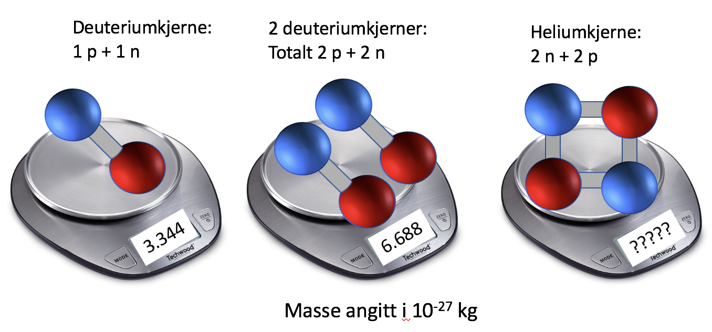

Forrige side🙂 🙁KjernemasserPADLET
La oss putte noen atomkjerner på kjøkkenvekta vår: 
Hadde bare noen rester i kjøleskapet, et par deuteriumkjerner og en heliumkjerne, det får duge! Deuterium er en isotop av hydrogen som har et proton og et nøytron i kjernen. Først måler vi en deuteriumkjerne, deretter to sammen og til slutt en heliumkjerne som består av nøyaktig det samme som to deuteriumkjerner. Hva tror du den siste vekte viser?